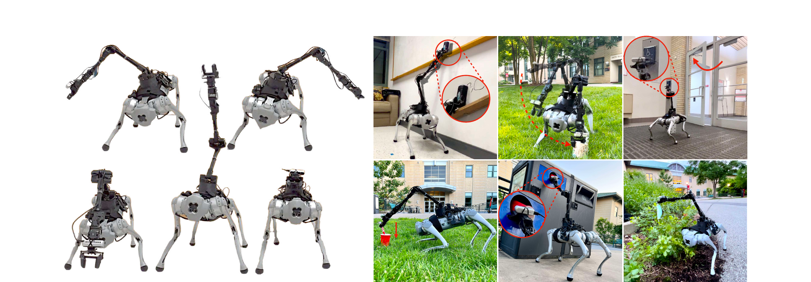
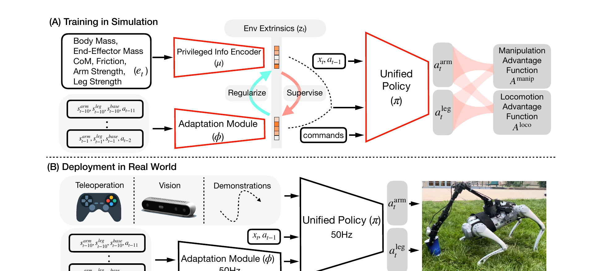

它是什么：一个网络同时管 19 个关节
你已经读过 VBC，DeepWBC 就是它的直接前身（同一作者 Cheng、Pathak，早两年）。一句话：装了机械臂的四足狗（Go1+WidowX，19 DoF），不分层、不解耦，用单个神经网络策略 π 同时输出腿和臂的所有关节指令，让它们像人一样协调——弯腰够低处、伸腿稳重心。它首次提出了两个后来被 VBC 沿用的关键技术：Advantage Mixing（解决高自由度信用分配）和 ROA（单阶段 Sim2Real）。读懂它，VBC 的很多设计你会瞬间明白『原来是从这继承的』。
过去给『腿+臂』机器人做控制，标准做法是解耦：一个控制器管腿走路，一个管臂操作。问题：① 需要大量工程去协调两者；② 误差在模块间传播；③ 动作生硬不自然；④ 生物学上不合理——人类的手脚是强运动协同的（你单手去够书架，对侧腿会自动调整重心）。DeepWBC 主张：用一个统一策略学这种全身协同。
① High-DoF control：19 个自由度、动态、高频，搜索空间随轨迹长度指数爆炸。
② Conflicting objectives / local minima：臂往右倾时腿要改步态配平，容易只学会『操作』或『走路』其一，陷局部最优。
③ Dependency（依赖）：要捡地上的东西，末端必须靠腿弯下来支撑——操作能力上限被腿能否适配卡住。

硬件：低成本全板载（<6K USD）
| 四足 | Unitree Go1（12 DoF） |
| 机械臂 | Interbotix WidowX 250s（6 DoF）+ 平行夹爪 → 共 19 DoF |
| 相机 | RealSense D435，装在夹爪附近 |
| 算力/供电 | 全部由 Go1 板载电池供电、板载推理，完全无外接（untethered） |
| 成本 | 约 6K USD（对比 Spot Arm / ANYmal+臂 >100K USD） |
统一策略框架：观测、动作与训练-部署一图流
上一节说『一个网络管全身』，那它具体吃什么、吐什么？这一节看整张框架图（Fig 2）。注意一个和 VBC 最关键的区别：DeepWBC 的策略直接输出 6 个臂关节的目标角度（joint-space control），而 VBC 改成了『输出末端位姿 + IK 反解』。这个差异正是 VBC 论文里 Table 4 证明 IK 精度更高、从而推动改进的地方。
统一策略 π 的输入输出
策略是单个神经网络，输入当前状态 + 命令 + 环境隐向量，输出腿和臂的目标关节角：
- $s^{\text{base}}_t \in \mathbb{R}^5$
- 机身 roll、pitch、机身角速度（无绝对高度——高度不变设计）。
- $s^{\text{arm}}_t \in \mathbb{R}^{12}$
- 每个臂关节的位置和速度。
- $s^{\text{leg}}_t \in \mathbb{R}^{28}$
- 每个腿关节的位置、速度 + 足端接触指示。
- $a_{t-1} \in \mathbb{R}^{18}$
- 上一步动作（6 臂 + 12 腿）。
- $[p^{\text{cmd}}, o^{\text{cmd}}] \in \mathbb{SE}(3)$
- 末端执行器的目标位置 + 朝向命令。
- $[v^{\text{cmd}}_x, \omega^{\text{cmd}}_{\text{yaw}}]$
- 机身前向线速度 + 偏航角速度命令。
- $z_t \in \mathbb{R}^{20}$
- 环境外在隐向量（摩擦、质量、电机强度…）。训练用特权编码器算，真机用适应模块估（见 §04）。
- $a^{\text{arm}}_t \in \mathbb{R}^6$
- 目标臂关节角（注意：直接关节角，不是末端位姿！）。
- $a^{\text{leg}}_t \in \mathbb{R}^{12}$
- 目标腿关节角。两者都经 PD 控制器转力矩。腿臂都用关节空间控制，作者称这比操作空间控制（OSC）更易学、Sim2Real gap 更小、还能学避自碰撞。

第 1 步：仿真里给『上帝信息』
训练时拿到真实物理参数 e_t（质量、摩擦、电机强度…），经特权编码器 μ 编成隐向量 z^μ，让策略知道『当前是什么环境』。
输入是什么：真实场景的照片、视频或传感器记录。此时它们只是原始素材，还不能直接在物理引擎中交互。
这一步究竟做什么：训练时拿到真实物理参数 e_t（质量、摩擦、电机强度…），经特权编码器 μ 编成隐向量 z^μ，让策略知道『当前是什么环境』。
输出到哪里：一组比原始输入更紧凑的内部特征；它不是最终动作或画面。这个结果会交给下一步“统一策略出全身动作”继续处理。
为什么不能省略：只复制外观不能产生可信交互；需要把视觉表示与碰撞、关节或动力学对应起来，策略训练才有物理意义。
第 2 步：统一策略出全身动作
π 综合状态 + 命令 + z，单网络同时输出 6 臂关节角 + 12 腿关节角，PD 转力矩。腿臂共享同一套『身体认知』。
输入是什么：来自上一步“仿真里给『上帝信息』”的产物：一组比原始输入更紧凑的内部特征；它不是最终动作或画面。本步骤还会按论文设置读取当前条件、时间步或训练信号。
这一步究竟做什么：π 综合状态 + 命令 + z，单网络同时输出 6 臂关节角 + 12 腿关节角，PD 转力矩。腿臂共享同一套『身体认知』。
输出到哪里：经过本步骤处理、含义更明确的中间结果。这个结果会交给下一步“Advantage Mixing 引导学习”继续处理。
为什么不能省略：它承担上下两步之间的接口；缺少它，前一步产生的信息无法以正确格式或正确含义传到下一步。
第 3 步：Advantage Mixing 引导学习
用两个 advantage（操作/移动）+ 课程 β，先让臂学操作、腿学走路，再逐渐混合，最终学到互相帮助的协调行为（详见 §03）。
输入是什么：来自上一步“统一策略出全身动作”的产物：经过本步骤处理、含义更明确的中间结果。本步骤还会按论文设置读取当前条件、时间步或训练信号。
这一步究竟做什么：用两个 advantage（操作/移动）+ 课程 β，先让臂学操作、腿学走路，再逐渐混合，最终学到互相帮助的协调行为（详见 §03）。
输出到哪里：经过本步骤处理、含义更明确的中间结果。这个结果会交给下一步“ROA 让真机能用”继续处理。
为什么不能省略：它承担上下两步之间的接口；缺少它，前一步产生的信息无法以正确格式或正确含义传到下一步。
第 4 步：ROA 让真机能用
适应模块 φ 学会只凭历史观测估出 z^φ，部署时顶替 z^μ。整套零真机微调 50Hz 板载跑，支持手柄/视觉/demo 三种命令（详见 §04）。
输入是什么：来自上一步“Advantage Mixing 引导学习”的产物：经过本步骤处理、含义更明确的中间结果。本步骤还会按论文设置读取当前条件、时间步或训练信号。
这一步究竟做什么：适应模块 φ 学会只凭历史观测估出 z^φ，部署时顶替 z^μ。整套零真机微调 50Hz 板载跑，支持手柄/视觉/demo 三种命令（详见 §04）。
输出到哪里：经过本步骤处理、含义更明确的中间结果。这是图中这条链路的最终产物，随后会进入真实执行、模型更新或指标评测。
为什么不能省略：它把前面得到的内部结果落实为可执行动作、可训练模型或可解释指标，完成从方法到结果的最后一步。
末端目标采样（VBC 直接继承的部分）
末端位置命令在球坐标 $(l,p,y)$ 采样，再在当前位置和采样目标间插值——和 VBC 一模一样的公式：
- $v^{\text{cmd}}_x$
- 训练 $[0,0.9]$ / 测试 $[0.8,1.0]$ m/s
- $\omega^{\text{cmd}}_{\text{yaw}}$
- 训练 $[-1,1]$ / 测试 $[-1,-.7]\cup[.7,1]$
- $l$（半径）
- 训练 $[0.2,0.7]$ / 测试 $[0.6,0.8]$
- $p,y$（俯仰/偏航）
- $[-2\pi/5,2\pi/5]$、$[-3\pi/5,3\pi/5]$
- $p^{\text{end}}$ 重采样
- 到 $T_{\text{traj}}$ 或会引起自碰撞/触地时重采。$o^{\text{cmd}}$ 从 $\mathbb{SO}(3)$ 均匀采。
核心创新①：Advantage Mixing 优势混合
§01 提过『高 DoF 信用分配难』：19 个关节一起动，得到一个奖励，到底是哪个关节的功劳/过错？标准做法是用课程学习（先简单任务后难任务），但要手调一堆课程参数。DeepWBC 的聪明做法：利用一个先验——操作主要靠臂、移动主要靠腿，把这个结构直接写进 PPO 的优势函数里。这就是 Advantage Mixing，是这篇最核心的算法贡献。
先看奖励：操作奖励 + 移动奖励（Table 1）
总奖励 $r = r^{\text{manip}} + r^{\text{loco}} + r_{\text{energy}} + r_{\text{alive}}$：
| 类 | 项 | 定义 |
|---|---|---|
| manip | following | $0.5\,e^{-\lVert[p,o]-[p^{\text{cmd}},o^{\text{cmd}}]\rVert_1}$ |
| manip | energy | $-0.004\sum_{\text{arm}}|\tau_j\dot{q}_j|$ |
| loco | following | $-0.5|v_x-v^{\text{cmd}}_x| + 0.15\,e^{-|\omega_{\text{yaw}}-\omega^{\text{cmd}}_{\text{yaw}}|}$ |
| loco | energy | $-0.00005\sum_{\text{leg}}|\tau_i\dot{q}_i|^2$ |
| loco | alive | $0.2 + 0.5\,v^{\text{cmd}}_x$ |
- manip following 用 $L_1$ + 指数
- 末端位姿（位置+朝向）越接近命令，奖励越高（满分 0.5）。
- 腿能量用平方 $|\tau\dot q|^2$
- 对腿关节用二次方能量惩罚，鼓励更低、更均衡的能耗（来自作者另一篇 minimizing energy 的结论）。
- alive 随命令速度增大
- 命令走得越快、存活奖励越高，避免策略为了省事原地不动。
Advantage Mixing 公式（核心）
把上面的奖励拆成两路 advantage：$A^{\text{manip}}$（来自 $r^{\text{manip}}$）和 $A^{\text{loco}}$（来自 $r^{\text{loco}}$），然后分别加权到臂动作和腿动作的策略梯度上：
- $\log\pi(a^{\text{arm}}_t\mid s_t)$
- 臂动作的对数概率。它的梯度更新主要由后面括号的权重决定。
- $(A^{\text{manip}}+\beta A^{\text{loco}})$ · 臂的权重
- 臂动作满权重吃操作优势 $A^{\text{manip}}$，只吃 $\beta$ 倍的移动优势。即：训练初期（$\beta\approx0$）臂只关心『操作做得好不好』，不被走路干扰。
- $(\beta A^{\text{manip}}+A^{\text{loco}})$ · 腿的权重
- 对称地，腿动作满权重吃移动优势 $A^{\text{loco}}$，初期不被操作干扰。
- $\beta = \min(t/T_{\text{mix}}, 1)$
- 课程参数：从 0 线性增长到 1。$\beta=0$ 时臂腿各管各的（解耦、好学）；$\beta=1$ 时两路优势完全混合，臂也开始为走路负责、腿也为操作负责 → 学出协调全身行为。
- 整体直觉
- 先把难问题拆成两个简单子问题分别学（降低信用分配难度），再用 $\beta$ 平滑地『焊』成一个协调整体。只需调一个参数 $T_{\text{mix}}$，比传统多参数课程省心。用 PPO 优化。
像教双人三足跑：一开始让两人各自练好自己的腿（β=0，互不干扰），熟练后再慢慢要求两人配合节奏（β→1）。直接一上来就要求完美配合，俩人会互相绊倒（陷局部最优）。
没有 Advantage Mixing 时，统一策略会『只学会走路、忽略操作』（信用分配崩了）；有了它，命令速度跟踪误差（vel error）随训练快速下降。Table 4 也显示统一策略（survival 97.1%）显著优于 separate / uncoordinated 基线。
核心创新②：Regularized Online Adaptation (ROA)
策略观测里有个环境隐向量 z（编码摩擦、质量），仿真能算、真机算不出来。经典解法是 RMA 那种两阶段师生：先训特权策略，再单独训一个适应模块去模仿。但两阶段有个『realizability gap（可实现性鸿沟）』——教师用全状态预测的 z，学生只凭部分观测根本估不出来，导致监督信号无效。DeepWBC 提出 ROA：单阶段、双向对齐，让『教师的 z 也别太离谱、学生能估出来』。这个 ROA 后来被 VBC 原封不动沿用。
- $z^\mu$ · 特权编码器 μ 的输出
- 用真实物理参数 $e$ 编码的隐向量。训练时策略实际用它。
- $z^\phi$ · 适应模块 φ 的输出
- 只用历史观测估的隐向量。真机部署用它。
- $-J(\theta_\pi,\theta_\mu)$ · RL 项
- 联合优化『统一策略 + 特权编码器』（最大化 Advantage-Mixing 目标 J，故取负做最小化）。
- $\lambda\lVert z^\mu - \text{sg}[z^\phi]\rVert_2$ · 正则项
- 把特权编码器往适应模块拉——逼 z^μ 别学出『历史观测根本估不到』的信息。$\lambda$=拉格朗日乘子（正则强度），用对偶梯度下降自动调。这是 ROA 比 RMA 多出来的关键一项。
- $\lVert \text{sg}[z^\mu] - z^\phi\rVert_2$ · 模仿项
- 把适应模块往特权编码器拉（φ 学 μ）。这一项 RMA 也有。
- $\text{sg}[\cdot]$ · stop-gradient
- 梯度停止：保证两个方向各自单向更新，不互相打架。
- $\lambda = 0$ 退化为 RMA
- 把正则项关掉，就是 RMA 的两阶段做法。ROA 是 RMA 的推广。论文实测：ROA 的 realizability gap = 2e-4，RMA = 0.31（差三个数量级），带来 20% 的末端误差下降（Table 6）。
RMA 是单向的：教师怎么学，学生硬追。但教师可能学到『靠全状态才知道、历史观测推不出』的 z，学生追不上 → gap。ROA 加的正则项相当于告诉教师：『你也要照顾学生，别学些它学不会的东西』。两边各退一步，gap 就小了。这也顺带去掉了两阶段流程——一个 loss 端到端搞定。
特权编码器 μ、适应模块 φ（吃历史 rollout，卷积网络）。三者交替优化：π+μ 若干步 → φ 若干步 → λ 用 $\lambda\leftarrow\lambda+\alpha\frac{\partial L}{\partial\lambda}$ 更新。适应模块在策略 π 和编码器 μ 收敛后才开始训。
实验与三种部署接口
两大创新讲完，看效果。三个问题：① 统一策略真的比解耦强吗？② Advantage Mixing 和 ROA 各自有用吗？③ 真机怎么发命令？
仿真消融（Table 4/5/6）
三种部署命令接口
| ① 遥操作 | 手柄设末端增量：$p^{\text{cmd}}_{t+1}=p^{\text{cmd}}_t+\Delta p$，$\Delta p=(\Delta l,\Delta p,\Delta y)$ 由摇杆给。 |
| ② 视觉跟踪 | RGB 相机 + AprilTag 取物体位姿 $p^{\text{tag}}$，反馈控制 $p^{\text{cmd}}_t=K^Tp^{\text{tag}}$（$K$=增益向量）闭环抓取。 |
| ③ 开环回放 | 给一条预定义末端轨迹，边走边按轨迹动臂（Fig 7：草地上边走边够杯子）。 |
实测机身 pitch/roll 与末端命令强相关——命令末端够高/够远时，机身自动俯仰、侧倾去配合。这正是『全身协调』在真机上的直接证据：腿关节和臂关节一起参与『够到目标』。
DeepWBC → VBC：两年间改了什么
你两篇都读了，这里把血缘理清楚。DeepWBC（2022）解决『怎么用一个策略协调全身』，但它没有视觉、需要人发末端命令。VBC（2024）在它基础上补上『自主』——加了视觉高层规划，让机器人自己决定末端目标。下面这张对照表是这条腿足 loco-manipulation 线的演进精华。
| 维度 | DeepWBC (2022) | VBC (2024) |
|---|---|---|
| 定位 | 统一全身控制器 | 自主视觉 loco-manipulation 系统 |
| 谁发末端目标 | 人（手柄/AprilTag/demo） | 高层视觉策略自主决定 |
| 层级 | 单层统一策略 | 分层：高层规划 + 低层全身控制 |
| 手臂控制 | RL 直接出臂关节角 | RL 出末端位姿 + IK 反解（精度高 5–14×） |
| 视觉 | 无（仅 AprilTag 简单跟踪） | 分割掩码 + 掩码深度（TrackingSAM） |
| Advantage Mixing | ✅ 首创 | 低层沿用类似思想 |
| ROA | ✅ 首创 | ✅ 原样沿用 |
| 末端目标球坐标插值 | ✅ 首创 | ✅ 原样沿用 |
| 硬件 | Go1 + WidowX 250s | B1 + Z1（更大负载） |
DeepWBC 把『腿臂协调』这件事用一个 RL 策略解决了，但『做什么』还得靠人。VBC 给它接上『眼睛和大脑』（视觉高层），让它自主。再往后，如果给高层换成一个 VLA（能理解语言指令、出抽象动作），DeepWBC/VBC 的低层就成了那只『会弯腰的具身身体』——这正是全身 VLA 的拼图方式。
DeepWBC = 单个统一策略协调腿+臂 19 DoF + Advantage Mixing（拆解-混合解决高 DoF 信用分配）+ ROA（单阶段双向对齐做 Sim2Real）+ 低成本全板载硬件。它是腿足全身控制学习化的奠基工作，VBC 站在它的肩膀上加了自主视觉。